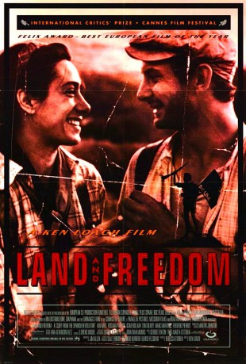

#11740 Land and Freedom
 
 IMDB-Wertung: 7.6 / 10
IMDB-Wertung: 7.6 / 10  Metascore: 0
Metascore: 0 
Als Dave Carr stirbt, entdeckt seine Enkelin in seinem Nachlaß Briefe und Berichte aus dem spanischen Bürgerkrieg. Als junger Arbeiter reiste Carr 1936 nach Barcelona, um an der Seite der Kommunisten gegen Franco zu kämpfen, und verliebt sich dort in die Mitstreiterin Blanka.
Jahr: 1995
Dauer: 54 Minuten
FSK: 12
Land: England Studio: Epix MediaTonspuren: DD2.0 - ,
Untertitel:
Auflösung: SD (672x368) Größe: 699 MB
Genre: Drama, Krieg
Regisseur: Ken Loach
Drehbuch: Jim Allen
Soundtrack: George Fenton
Darsteller:
 Ian Hart als David Carr
Ian Hart als David Carr- Rosana Pastor als Blanca
- Icíar Bollaín als Maite
- Tom Gilroy als Lawrence
- Marc Martínez als Juan Vidal
 Frédéric Pierrot als Bernard Goujon
Frédéric Pierrot als Bernard Goujon- Paul Laverty als Militia member
- Jordi Dauder als Salas
 Francesc Orella als Casado
Francesc Orella als Casado- Francisco Franco als Himself (archive footage) (uncredited)
- Andrés Aladren als Militia member
- Sergi Calleja als Militia member
- Raffaele Cantatore als Militia member
- Pascal Demolon als Militia member
- Josep Magem als Militia member
- Eoin McCarthy als Connor
- Jürgen Müller als Militia member
- Víctor Roca als Militia member
- Emil Samper als Militia member
- Suzanne Maddock als Kim, David's granddaughter
- Mandy Walsh als Dot, militia member
- Miguel Cabrillana als Speaker at meeting
- Angela Clarke als Kitty
- Rafael Díaz als Barracks officer
- Felicio Pellicer als Nationalist officer
- Ricard Arilla als Priest
- Pep Molina als Pepe
- Enriqueta Ferré als Concierge
- Asunción Royo als Old woman
- Phil O'Brien als Ambulance man
- Dave Seddon als Ambulance man
- Xavier Amatller als Man on the train
- Jaime Prats als Man on the train
- Jose Luis Prats als Man on the train
- Carles Vilarrasa als Man on the train
- Fina Alcañiz als Townsperson
- Claudio Domínguez als Townsperson
- Ernesto Grau als Townsperson
- Maria Folch als Townsperson
- Maite Lucas als Townsperson
- Sebastia Marmaña als Townsperson
- Lola Olives als Townsperson
- Ma Eugenia Palatsi als Townsperson
- Pepa Palatsi als Townsperson
- Miguel Quintana als Townsperson
- Aniceto Rallo als Townsperson
- Paco Rangel als Townsperson
- Jose Antonio Ripolles als Townsperson
- Consol Segura als Townsperson
- Manolo Vicent als Townsperson
Datei: X:\1995\Land and Freedom (1995, FSK12, 672x368) CD1.avi seit 14.09.2019
Festplatte: Gemischt-01+Anime
 Es gibt insgesamt 85 Filme in der Gruppe '1995'
Es gibt insgesamt 85 Filme in der Gruppe '1995'